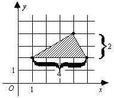

Often, you will be given a geometric figure drawn on a coordinate system and will be asked to find its area or perimeter. In these problems, use the properties of the coordinate system to deduce the dimensions of the figure and then calculate the area or perimeter. For complicated figures, you may need to divide the figure into simpler forms, such as squares and triangles. A couple examples will illustrate:
Example:
What is the area of
the quadrilateral in the coordinate system below?
A =
bh =
1
2
× 4 × 2 = 4
1
2
The area of the bottom triangle is the same, so the area of the quadrilateral is 4 + 4 = 8. The answer is (D).

Example:
What is the perimeter
of Triangle ABC in the figure below?
AB = √(0 − 3)2 + (4 − 0)2 = √9 + 16 = √25 = 5
AC = √(0 − 5)2 + (4 − 1)2 = √25 + 9 = √34
BC = √(5 − 3)2 + (1 − 0)2 = √4 + 1 = √5
Adding these lengths gives the perimeter of Triangle ABC:
AB + AC + BC = 5 + √34 + √5
The answer is (A).